|
Tutorial: create a new exploration asset and generate forecasts
This tutorial builds a green-field development from scratch: a new asset with one platform, 8 oil producers, 4 water injectors and 4 gas injectors drilled by one rig, and a 120,000 stb/d oil plateau. Well potentials come from decline curves. At the end you run the forecast and look at the results.
The example uses an asset called "Field A", a project called "Evaluation" and a scenario called "Base". The screenshots were taken with another asset name; the steps are the same.
The main ribbon is organised in groups: "Manager" ("Scenario Manager", "Duplicate scenario"), "Expertise" (the inputs: "Network", "Material balance", "Decline Curves", "Opportunities", "Sequence"…), "Forecast" ("Settings", "Deterministic", "Probabilistic"…) and "Forecast Results" ("Charts", "Maps", "Export to Excel", "Dashboard"…).
1. Create a new asset
1.On the main ribbon, click "Scenario Manager".
2.Click "Create new Asset" (in the "Assets / Projects" group).
3.Type the asset name in "Asset:" ("Field A") and click "Create Asset".
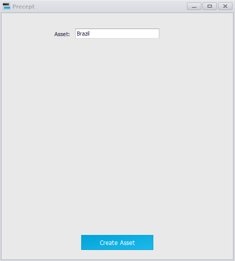
2. Load the new asset
In the main window, select "Field A" in the asset list (left of "Project:").
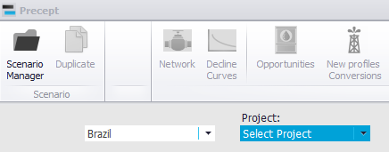
At this point only you and a Super User can open the asset. To let other users work on it, add them with "Security" on the main ribbon (see Security / Access policy).
3. Create a new project
The asset has no project yet.
1.Click "Scenario Manager", then "Create new Project".
2.Type "Evaluation" in "Project :" and click "Create Project".
3.Check that "Evaluation" is selected in the project list of the Scenario Manager.
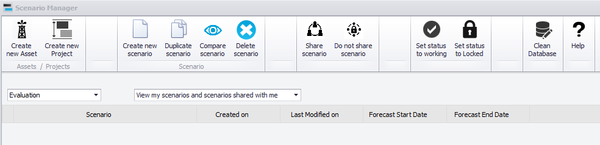
4. Create a new scenario
The project "Evaluation" has no scenario yet.
1.In the Scenario Manager, click "Create new scenario from scratch".
2.Type "Base" in "New Scenario Name :". Leave "share scenario with other users" unticked (the scenario stays private; you can share it later with "Share scenario").
3.Enter the "Forecast Start Date:" and "Forecast End Date:", an optional comment, and click "Create scenario".
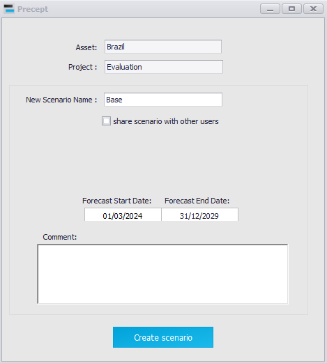
5. Load the new scenario
In the main window, select the project "Evaluation" and the scenario "Field A - Evaluation - Base" (a scenario's full name is always "Asset - Project - Scenario").
A scenario created from scratch starts from Precept's template, which holds a default network (a platform with oil export, gas export, water disposal, and the "OP", "WI" and "GI" manifolds). Its nodes are listed in the timeline.
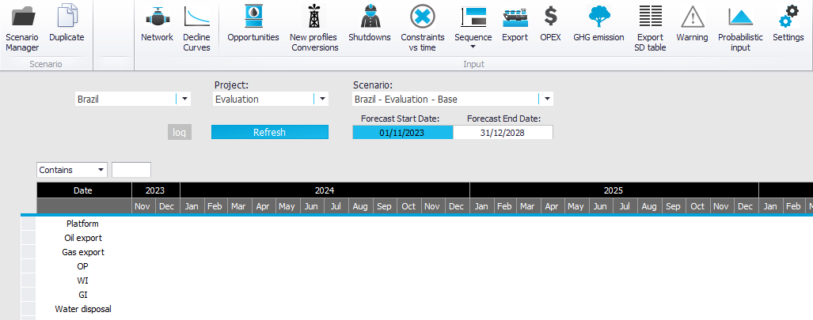
Click "Network" on the main ribbon to see the default network.
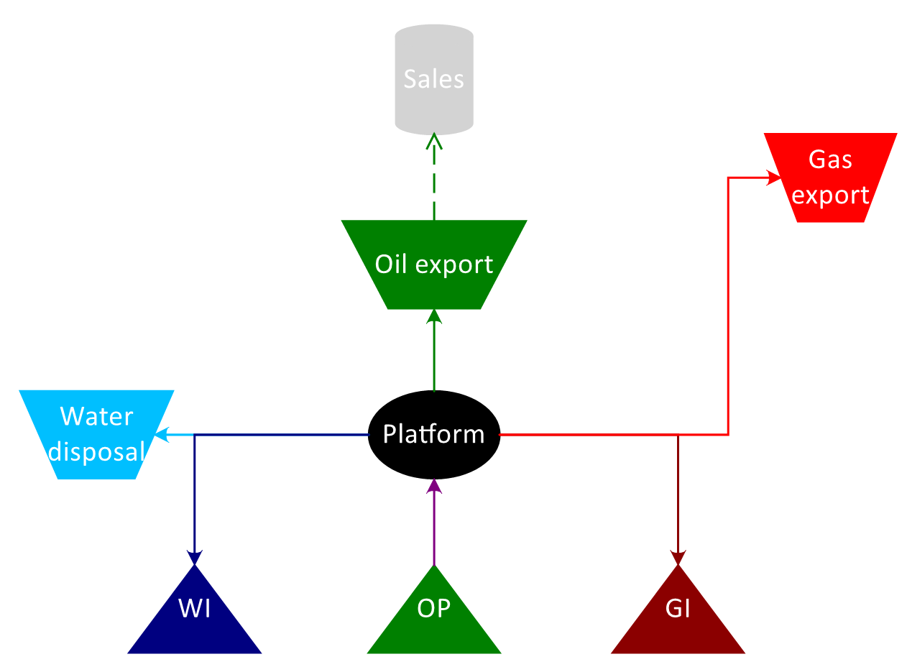
6. Edit the network and add a constraint
For this asset we keep the default network. To change it, click "Draw Network" in the Network window: a palette of icons opens beside the diagram. Drag a node icon (manifold, platform, process, compressor, export, flare, fuel…) onto the diagram and name it, then drag a pipe of the right fluid from the palette between two icons (the pipe colour is the fluid). See Network editor and Network modelling.
To model the production plateau, add a 120,000 stb/d oil constraint on the node "Platform":
1.In the Network window, the table on the left shows "View Initial Constraints".
2.In the row "Platform", type 120,000 in the "Oil" column (in the asset's oil-rate unit, shown in the column header).
3.Click "Save Network".
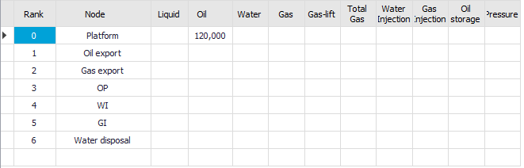
7. Add the wells
The development plan has 8 oil producers, 4 water injectors and 4 gas injectors. In the Network window, click "Add / Edit / Remove Wells": the "Wells in Network" window opens.
7.1 Oil producers
1.In the "Add Well" box enter: "Well Name:" OP1, "Type of Well:" Oil Producer, "Flows to:" OP, "Reservoir:" Carbonate, "Project:" Phase1. "Coordinates" (X, Y) are optional.
2.Tick "Create Opportunity to drill the well" and enter 60 in "Drilling duration (days):". Precept then also creates the opportunity to drill the well and its new profile (step 9), so you do not have to create them by hand.
3.To create OP2 to OP8 in the same go, click "+" in the "Duplicate Well" box and type the names in the "Duplicate as" list (or paste a list copied from Excel). The duplicates get the same inputs (and the same opportunity) as OP1.
4.Click "Add Well". Precept confirms "Well added to Network."
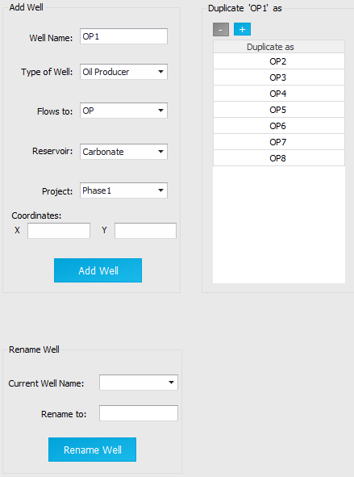
The 8 producers are now part of the asset model.
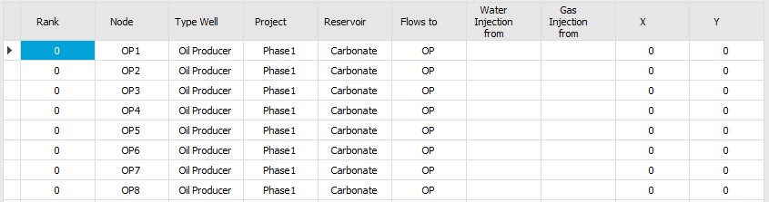
7.2 Water injectors
Add WI1 the same way with "Type of Well:" Water Injector. For an injector the label reads "Fluid comes from:": select "WI" (the node the injection water comes from). Duplicate it as WI2 to WI4, then click "Add Well".
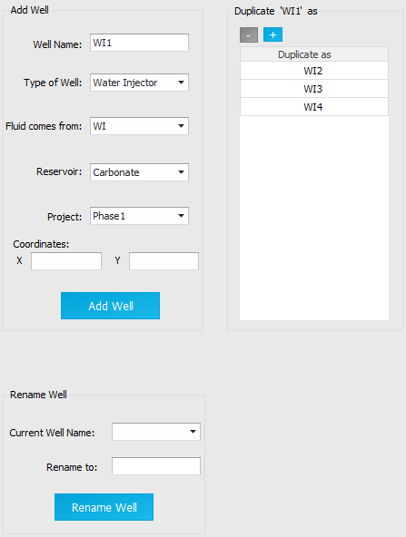
7.3 Gas injectors
Add GI1 with "Type of Well:" Gas Injector and "Fluid comes from:" GI. Duplicate it as GI2 to GI4, then click "Add Well".
8. Define the well potentials (decline curves)
First check how the scenario generates potentials: click "Settings" (in the "Forecast" group of the main ribbon). In the "Potentials" box, the list must show "Decline curves". (The other choices are "Material Balance", where potentials come from tank models, see Material Balance, and "Simulation", where a reservoir simulator runs in the loop, see Simulator coupling.) Click "Save Settings" if you changed it.
Then click "Decline Curves" on the main ribbon. The Decline Curves window opens on the current project and scenario (see Decline curves: Production and Injection potentials).
8.1 Oil producer OP1
1.In the lists on the left, check that the project "Evaluation" and the scenario "Field A - Evaluation - Base" are selected, then select the well "OP1".
2.Select "Exponential" in the decline-type list (highlighted in red below). The list also offers "Hyperbolic", "Harmonic", "Hybrid", "Multi-segment vs Cum" and "Multi-segment vs Time".
3.Enter the start rates and declines in the table: Liquid 25,000 stb/d, Oil 20,000 stb/d, Gas 5,000 Mscf/d, gas-lift 0; Nominal Decline Liquid 5 %, Oil 10 %, Gas 7 %. The b factor is 0 for an exponential decline. You can also drag the points on the chart.
4.Click "Save".
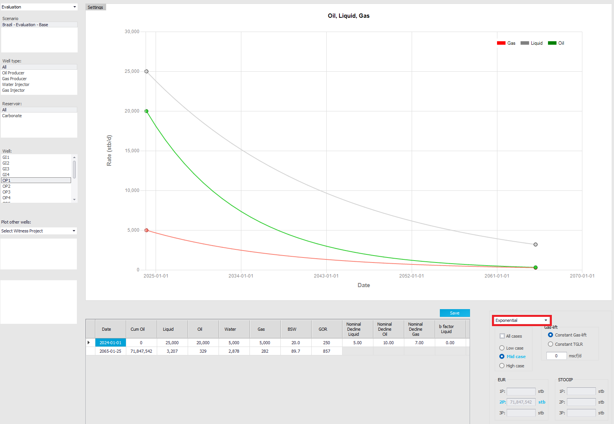
8.2 Water injector WI1
1.Select the well "WI1" and the decline type "Multi-segment vs Cum".
2.Enter a constant water-injection potential of 5,000 bwpd (one segment is enough). Make sure the segment covers the whole forecast: enter a large cumulative water injection, so the end date (highlighted in red below) is after the forecast end date.
3.Click "Save".
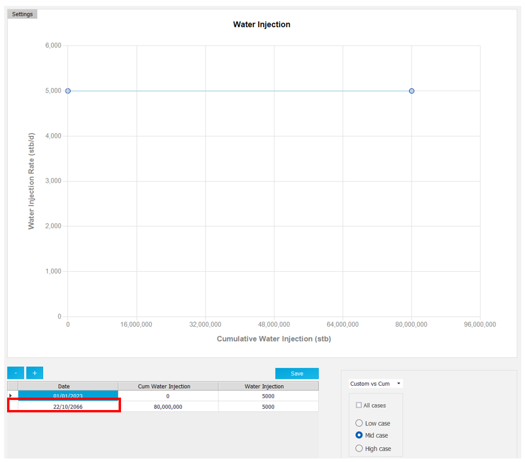
8.3 Gas injector GI1
1.Select the well "GI1" and the decline type "Multi-segment vs Cum".
2.Enter a constant gas-injection potential of 5,000 Mscf/d, with a cumulative gas injection large enough to cover the whole forecast.
3.Click "Save".
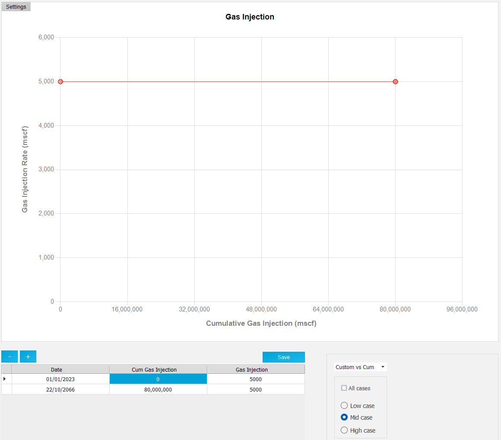
8.4 Copy the decline curves to the other wells
Here all producers share the profile of OP1, all water injectors that of WI1 and all gas injectors that of GI1.
1.In the Decline Curves window, click "Import / Duplicate profile". The "Import / duplicate profiles" window opens.
2.On the left, select "from Decline Curves", the well type, the case ("Mid"), the project, the scenario and the source well (OP1).
3.On the right, select the target project and scenario, "Duplicate one well profile to other wells", and the target wells (OP2 to OP8).
4.Click "-> Send to ->".
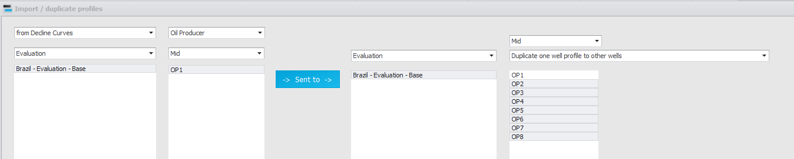
Do the same from WI1 to WI2–WI4:
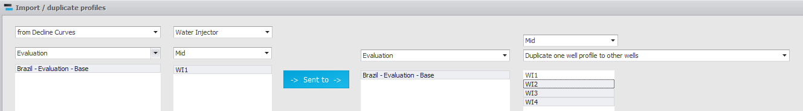
And from GI1 to GI2–GI4:
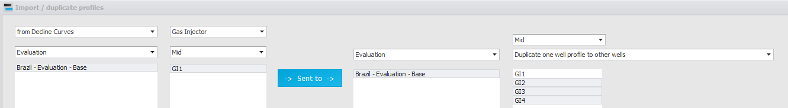
Shortcut: instead of copying the profiles, tick "Apply same potentials to all wells from same reservoir (explo)" in the "Potentials" box of "Settings", and every well of a reservoir uses the same potential.
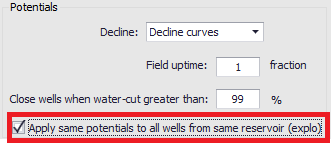
Go back to the main window and click "Refresh". The well rows of the timeline are black ("Well not drilled yet"): the wells exist and have a potential, but nothing has drilled them yet, so they never come online. Steps 9 and 10 schedule their drilling.
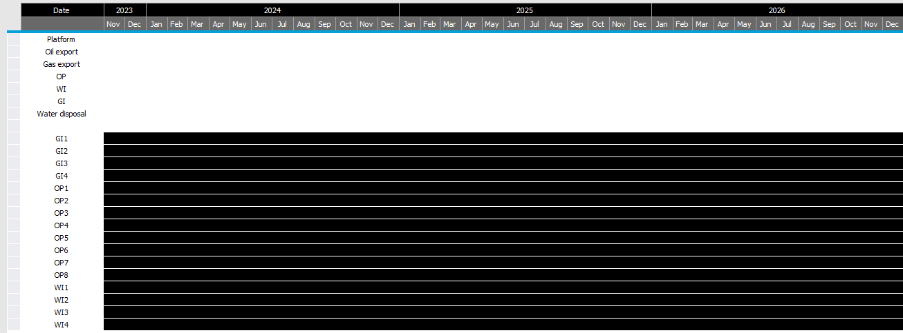
9. Add a rig (drilling sequence)
1.On the main ribbon, click "Sequence", then "Add / Remove string. Modify string start date".
2.Add a string named "Rig1" starting on 01/02/2024. The "Performed By" column is only used by "Auto-Schedule"; leave it empty here.
3.Click "Save", then "Refresh" in the main window: the Rig1 sequence appears, still empty.
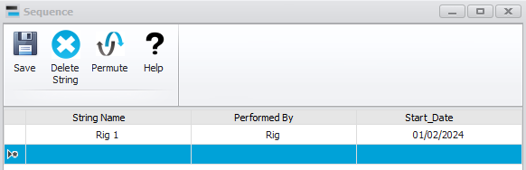
10. Opportunities to drill the wells
An opportunity is an event (here, drilling a well) that brings a new profile online once it is executed. If you ticked "Create Opportunity to drill the well" in step 7, the 16 opportunities already exist: open "Opportunities", select each one, click "Edit" and enter its CAPEX (created with 0). Otherwise, create them as follows.
1.On the main ribbon, click "Opportunities", then "New". The "Add Opportunity" window opens.
2."Opportunity:" OP1, "Duration (days):" 60, "Start Date:" "From Sequence" (the opportunity has no fixed date: it is executed when its turn comes in a sequence), "Color:" green.
3."Impact on Forecast:" "New profile". In the table, set "Type profile" to "is a new online profile", "New profile name" to OP1 (the decline curve defined in step 8), and CAPEX to 20,000,000 USD. "Project" fills in by itself, because the well's project was set when the well was added.
4.In the "Duplicate Opportunity" box, click "+" and list the other wells (OP2… OP8, WI1… WI4, GI1… GI4).
5.Click "Save" to create the 16 opportunities, then "Refresh" in the "All Opportunities" window.
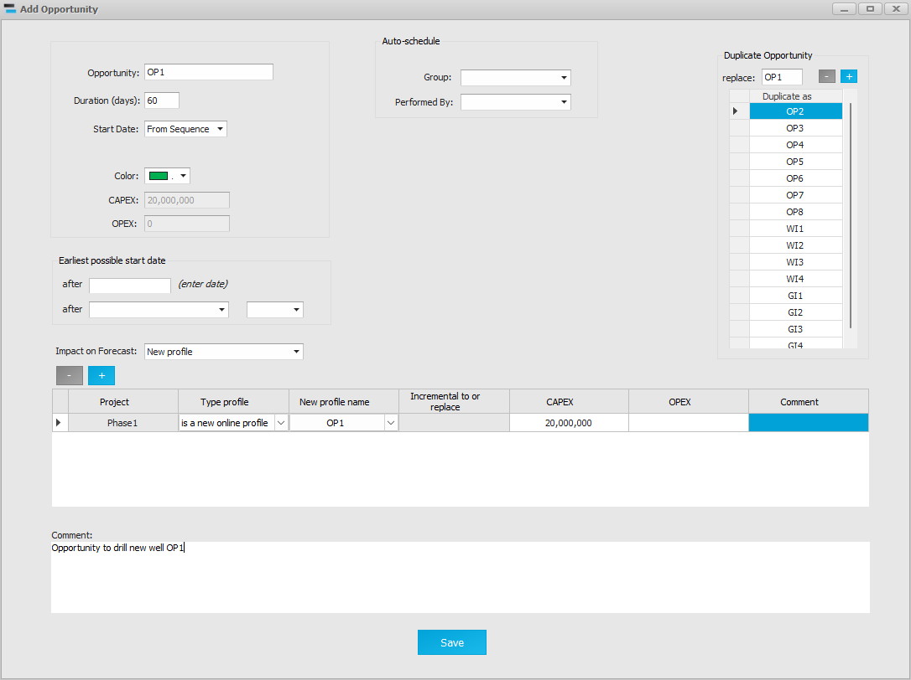
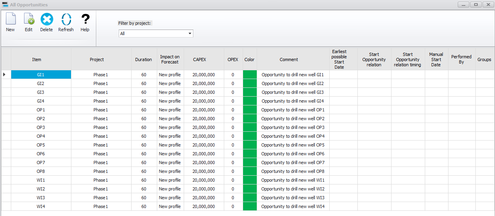
To tell the wells apart in the sequence, give the injector opportunities their own colour: select WI1, click "Edit", choose blue and "Save"; click "Refresh" and copy the "Color" cell of WI1 to the other water injectors (Ctrl+C, Ctrl+V). Do the same in red for the gas injectors. (Opportunities created from "Add / Edit / Remove Wells" already have these colours: green for producers, blue for water injectors, red for gas injectors.)
11. Build the drilling sequence
1.In the main window, tick "Show Pool of Opportunities" and click "Refresh". The 16 opportunities appear in the Pool.
2.Move them from the Pool to the Rig1 sequence in the drilling order you want: drag them with the mouse, or right-click an opportunity to cut it and double-click where it goes to paste it (see Build sequence of events).
The timeline now shows each well black ("Well not drilled yet") until its drilling ends, then white: the well is available for production or injection when the forecast runs.
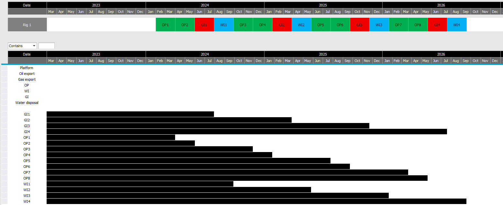
12. Define the objective function
The objective function is what the Precept solver maximises at every time step; when a constraint is reached it decides which wells are choked back or shut in. Click "Settings" ("Forecast" group). The "Objective Function" box shows the default, maximise oil to "Oil export":
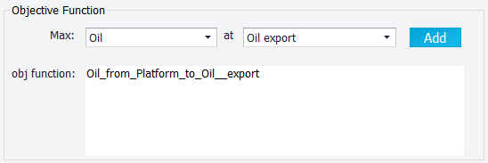
Here we also want to maximise water and gas injection:
1.Next to "Max:" select "Water Injection", next to "at" select "WI", and click "Add". A term for the water injected into "WI" is added to the "obj function:" box.
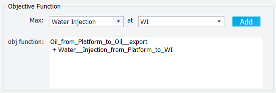
1.Select "Gas Injection" at "GI" and click "Add".
2.Click "Save Settings".
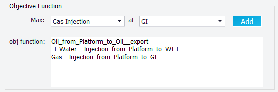
13. Run the forecast
1.Check the "Forecast Start Date" and "Forecast End Date" in the main window.
2.Click "Deterministic" in the "Forecast" group of the main ribbon. ("Probabilistic" runs many realisations instead, see probabilistic.)
When the run ends, the timeline shows:
•each well coming online once it is drilled;
•when the plateau is reached (green on the row "Platform": the node is oil-constrained);
•which wells are shut in (black) or choked back (light green) to honour the 120,000 stb/d constraint. Hover over a cell to read the reason.
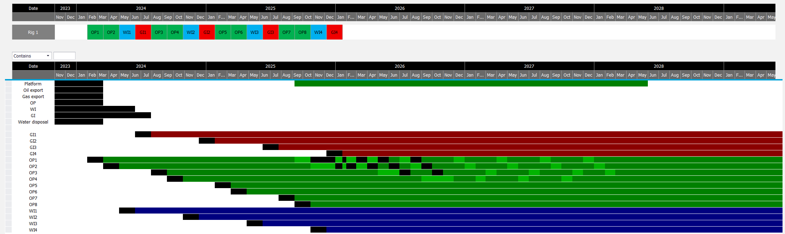
Tick "Show Network" to see the network with the constrained nodes highlighted month by month (see Network view).
14. Look at the results
Click "Charts" in the "Forecast Results" group of the main ribbon. The "Forecast Results" window shows the forecast at any node of the network, at field level, per reservoir or per project (see Forecast results: Charts).
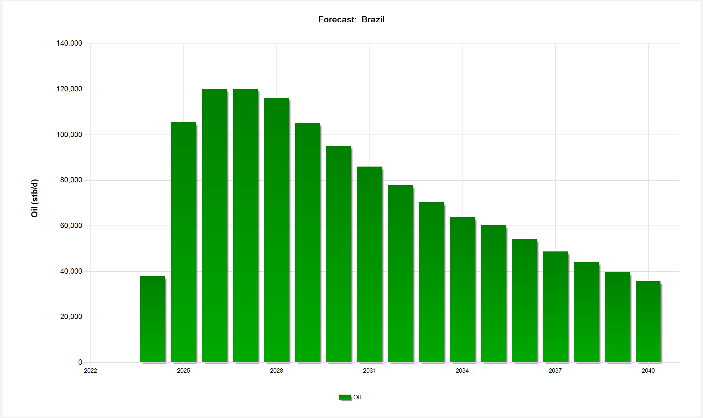
|